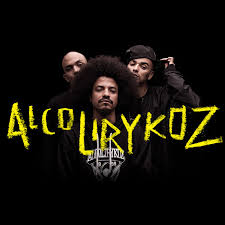
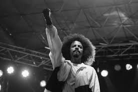
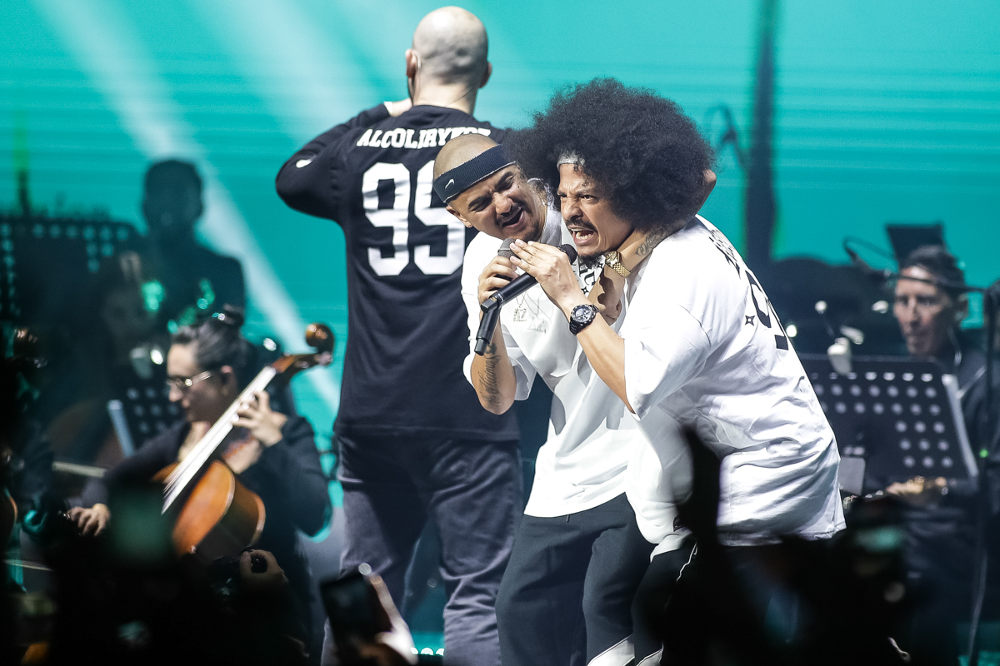
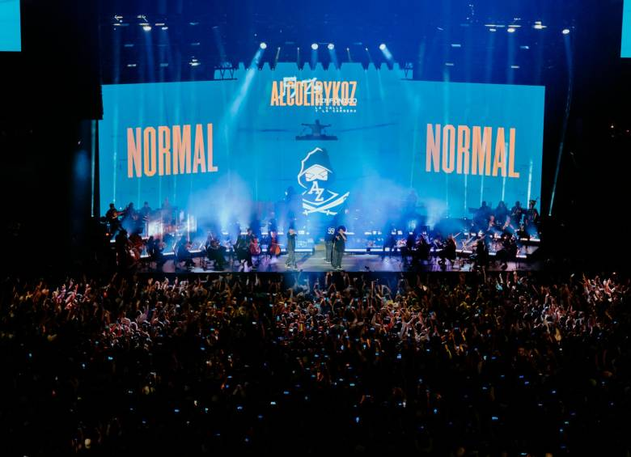
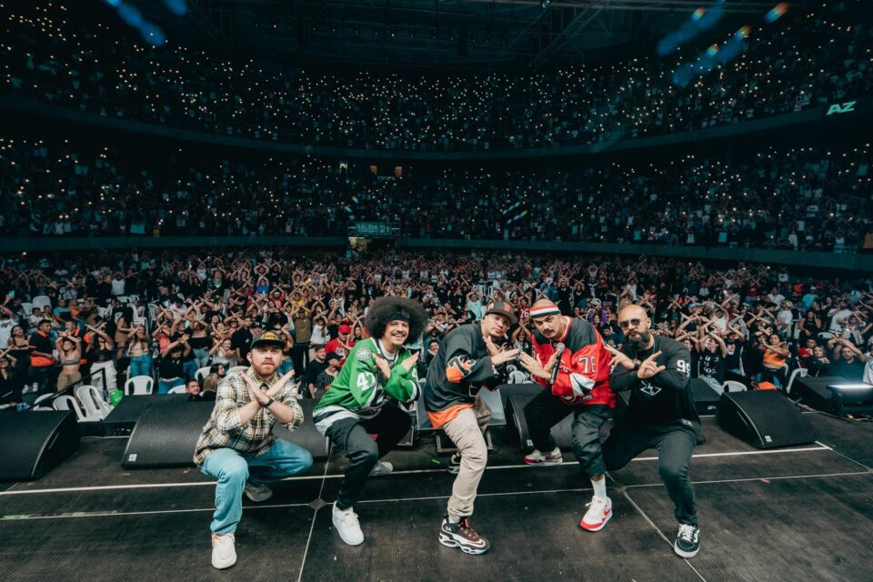

¡Bienvenido!
Sitio oficial de AlkolirikoZ, donde podrás encontrar toda la información sobre nuestra música e historia.
De la A a la Z.
Sitio oficial de AlkolirikoZ, donde podrás encontrar toda la información sobre nuestra música e historia.
AlkolirikoZ es un grupo que nació con la pasión de transmitir mensajes de la vida urbana y experiencias personales a través de la música.La historia de Alcolirykoz empieza en Aranjuez, con sus abuelos, cuando decidieron, como tantas familias en Colombia, dejar el campo para establecerse en la ciudad –unos impulsados por la idea de progreso; otros, obligados por la violencia.
Una de las cosas más chimbas para mí es que el barrio me dio una historia y yo supe qué hacer con ella, y hablo por todos, por Kaztro, por Fazeta. Ha sido el escenario de todo, desde ahí podemos hablar de política, de amor, de plata, de ambición, de todo, el escenario es el mismo, es el barrio”, dice Gambeta.
“Yo soy muy malo para trabajar en lo que no me gusta”, expresa. “Al rap es lo único que le hago horas extras sin aburrirme”, sentencia Kastro.
Aquí puedes ver algunos momentos de nuestros conciertos y sesiones de grabación.
  


Si quieres saber más o unirte a nuestros eventos, completa el siguiente formulario para contactarnos: